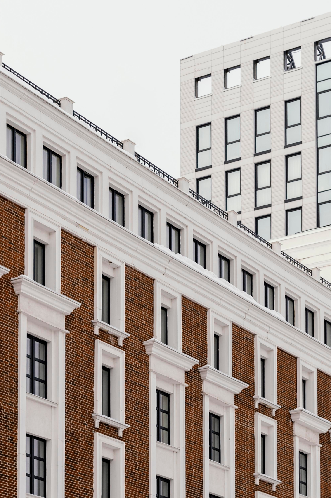

<section class="services">
    <div class="container">
        <div class="services__body">
            <div class="services__body-start">
                <h1>
                    Услуги
                </h1>
                <div class="splide" role="group" aria-label="Splide Basic HTML Example">
                    <div class="splide__arrows">
                        <button class="splide__arrow splide__arrow--prev">
                            <svg width="26" height="26" viewBox="0 0 26 26" fill="none"
                                xmlns="http://www.w3.org/2000/svg">
                                <path d="M1.16702 13.0006L24.8758 12.9995" stroke="white" stroke-width="1.5"
                                    stroke-linecap="round" stroke-linejoin="round" />
                                <path d="M13.022 0.978668L24.8758 12.9995L13.0209 25.0214" stroke="white"
                                    stroke-width="1.5" stroke-linecap="round" stroke-linejoin="round" />
                            </svg>
                        </button>
                        <button class="splide__arrow splide__arrow--next">
                            <svg width="26" height="26" viewBox="0 0 26 26" fill="none"
                                xmlns="http://www.w3.org/2000/svg">
                                <path d="M1.16702 13.0006L24.8758 12.9995" stroke="white" stroke-width="1.5"
                                    stroke-linecap="round" stroke-linejoin="round" />
                                <path d="M13.022 0.978668L24.8758 12.9995L13.0209 25.0214" stroke="white"
                                    stroke-width="1.5" stroke-linecap="round" stroke-linejoin="round" />
                            </svg>
                        </button>
                    </div>
                    <div class="splide__track">
                        <ul class="splide__list">
                            <li class="splide__slide">
                                
                            </li>
                        </ul>
                    </div>
                </div>
            </div>
            <div class="services__body-info">
                <h2 class="services__body-info-title">
                    Проектирование вентилируемых фасадов
                </h2>
                <div class="services__body-info-text">
                    <p class="services__body-info-text-desc">
                        Проектирование СветоПрозрачных Конструкций — это процесс разработки решений для установки
                        систем, состоящих из стекла и алюминиевых профилей. Эти конструкции применяются для создания
                        фасадов, окон, витражей и зимних садов, сочетая в себе эстетичность и высокие эксплуатационные
                        характеристики.
                    </p>
                    <span class="services__body-info-text-span">
                        Проектирование светопрозрачных конструкций необходимо для:
                    </span>
                    <ul class="services__body-info-text-list">
                        <li>
                            <span>1.⁠ ⁠Точного расчета прочности и безопасности</span> — проект учитывает нагрузки от
                            ветра, осадков
                            и температурных перепадов, чтобы гарантировать долговечность и устойчивость конструкций.
                        </li>
                        <li>
                            <span>2.⁠ ⁠Герметичности и теплоизоляции</span> — правильное проектирование обеспечивает защиту от
                            сквозняков и теплопотерь, повышая энергоэффективность здания и создавая комфортные условия
                            внутри.
                        </li>
                        <li>
                            <span>3.⁠ ⁠Эстетической интеграции</span> — проект учитывает архитектурные особенности здания, создавая лёгкие и визуально привлекательные фасады, которые гармонично вписываются в общий дизайн объекта.
                        </li>
                        <li>
                            <span>4.⁠ ⁠Точности монтажа</span> — проектные решения позволяют точно интегрировать светопрозрачные конструкции в здание, предотвращая ошибки на этапе производства и установки.
                        </li>
                    </ul>
                    <p class="services__body-info-text-desc">
                        Проектирование светопрозрачных конструкций обеспечивает не только прочность           и долговечность, но и эстетическое совершенство фасада, гарантируя высокие эксплуатационные характеристики и современный внешний вид.
                    </p>
                </div>
            </div>
        </div>
    </div>
</section>